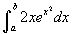
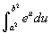
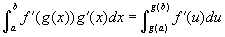

We have seen how to find antiderivatives using our knowledge of basic derivatives, using these derivative rules "backwards." In other words, if the integrand of an integral matches the result of one of our derivative rules, we know that the antiderivative is the function used in that rule.
Suppose that we have a more complicated integrand that comes from the application of the chain rule. For example, suppose f (u) = eu (which we call the outer function) and g(x) = x² (which we call the inner function). Then the composition of these two is f (g(x)) = ex² and the derivative of this, using the chain rule, is f '(g(x))g'(x) =2x ex² . If we have an integral with this for the integrand, then we know that the integrand came from our original functions via differentiation and the chain rule, allowing us to simplify the integrand and making it easier to find the resulting antiderivative.
In this specific example, suppose our integral is

The integrand is not the result of one of our basic derivative rules, but it looks like it might have come from the chain rule. If we let u = g(x) = x², then du/dx = g'(x) = 2x. If we treat the du and dx as formal objects, we can use algebra to change this into du = 2xdx. We can then simplify our integral by substituting du for 2xdx, u for x², and converting the limits from x limits into u limits and we get
which is simple to evaluate using the rule for differentiating eu. More generically, we can write
This is the antidifferentiation rule that corresponds to the chain rule. The trick, of course, is to figure out f and g given a messy integrand. This applet helps you see the equivalence of these two integrals; the work of algebraic manipulation for the substitution method can be found in any good calculus textbook.